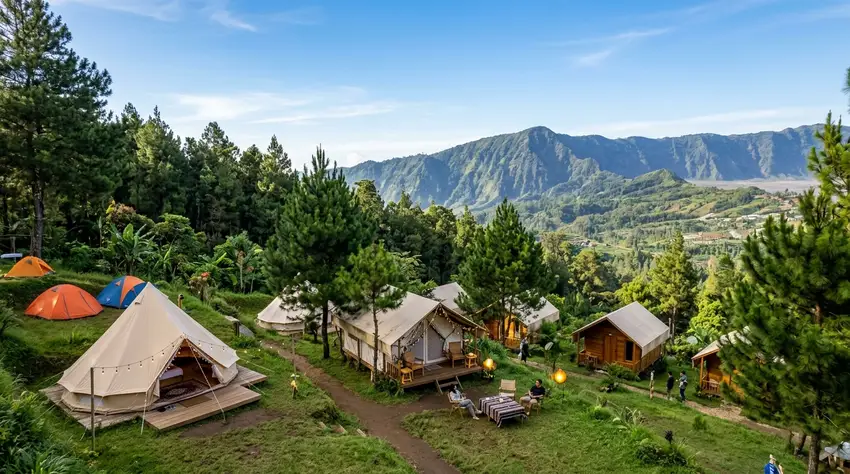

Wisata outdoor di Batu mencakup paralayang tandem di Gunung Banyak, glamping berbagai kelas harga, dan camping ground hemat, sehingga pilihan mengikuti anggaran dan gaya berlibur.
Ringkasan Inti
- Paket reguler paralayang tandem di Gunung Banyak tercatat Rp400.000 untuk WNI per Januari 2026, belum termasuk tiket masuk kawasan.
- Tarif glamping di Batu dan sekitarnya berkisar sekitar Rp500.000 sampai Rp1,2 juta per malam pada sumber 2025.
- Tiket camping ground di Malang Raya umumnya Rp15.000 sampai Rp35.000 per orang per malam (Februari 2026).
- Cuaca, jam operasional, dan tarif dapat berubah, sehingga konfirmasi ke pengelola diperlukan sebelum berangkat.
- Camping ground paling hemat, glamping paling nyaman, dan paralayang paling singkat tetapi paling berkesan bagi pencari adrenalin.
Apa Saja Wisata Outdoor di Batu yang Populer?
Wisata outdoor di Batu yang populer meliputi paralayang tandem di Gunung Banyak, glamping di Batu dan Pujon, serta camping ground di Coban Rais dan sekitarnya.
Kota Batu berada di dataran tinggi Malang Raya, Jawa Timur, dengan udara sejuk dan lanskap pegunungan. Kondisi ini mendukung aktivitas luar ruangan. Tiga aktivitas yang paling sering dicari wisatawan adalah:
- Paralayang tandem: Terbang bersama pemandu dari kawasan Gunung Banyak di Kecamatan Bumiaji.
- Glamping: Menginap di tenda atau kabin yang dilengkapi kasur, kamar mandi, dan fasilitas mirip penginapan.
- Camping ground: Berkemah di area khusus dengan tenda sendiri atau tenda sewaan.
Setiap aktivitas memiliki karakter, biaya, dan tingkat kenyamanan yang berbeda. Bagian berikut merangkum ketiganya secara berdampingan.
Berapa Harga Paralayang Tandem di Gunung Banyak?
Paket reguler paralayang tandem di Gunung Banyak, Batu, tercatat Rp400.000 untuk WNI dan Rp500.000 untuk WNA per Januari 2026, belum termasuk tiket masuk kawasan.
Paket reguler dipatok Rp400.000 untuk WNI dan Rp500.000 untuk WNA, dengan durasi terbang sekitar 5 sampai 10 menit. Tersedia pula paket Insta Rp600.000 untuk WNI dan Rp700.000 untuk WNA, dan biaya tersebut belum termasuk tiket masuk kawasan.
Harga dapat lebih tinggi bila paket menyertakan foto, video, atau antar jemput dari hotel. Rincian paket dan simulasi biaya ada pada panduan harga paralayang tandem di Gunung Banyak.
Berapa Kisaran Harga Glamping di Batu?
Harga glamping di Batu dan sekitarnya pada sumber 2025 berkisar sekitar Rp500.000 sampai Rp1,2 juta per malam, tergantung tipe tenda, fasilitas, dan hari menginap.
Sumber yang berbeda mencatat tarif yang berbeda untuk satu lokasi yang sama. Salah satu ulasan mencatat glamping bergaya Korea di Batu Flower Garden mulai sekitar Rp500.000 per malam, sedangkan sumber lain pada Maret 2025 mencantumkan tarif mulai sekitar Rp1,2 juta per malam untuk lokasi yang sama. Selisih ini menunjukkan bahwa tarif bergantung pada tipe unit, musim, dan waktu pencatatan.
Perbandingan tipe, fasilitas, dan lokasi dibahas pada artikel harga glamping Batu dan perbandingannya.
Berapa Biaya Camping Ground di Batu?
Tiket camping ground di Malang Raya, termasuk Batu, umumnya Rp15.000 sampai Rp35.000 per orang per malam, dan penyewaan tenda dikenakan biaya tambahan.
Sebuah panduan Februari 2026 mencatat tiket masuk camping ground biasa berkisar Rp15.000 sampai Rp35.000 per orang per malam. Angka ini belum mencakup sewa tenda, sewa peralatan, parkir, dan makan.
Sebagai contoh lokasi di Batu, Coban Rais pada catatan Januari 2024 mengenakan tiket Rp10.000, sewa dan pemasangan tenda Rp60.000, atau Rp20.000 bila membawa tenda sendiri. Karena data ini lebih lama, konfirmasi ulang tetap perlu. Daftar lokasi dan kriteria pemilihan ada pada panduan camping ground terbaik di Batu.

Aktivitas camping ground dan tempat glamping populer dengan fasilitas lengkap di Batu Malang.
Bagaimana Perbandingan Paralayang, Glamping, dan Camping Ground?
Paralayang menawarkan sensasi terbang singkat, glamping menawarkan kenyamanan menginap, dan camping ground menawarkan pengalaman alam paling hemat, sehingga ketiganya melayani tujuan liburan yang berbeda.
Parameter perbandingan yang paling berguna adalah biaya, durasi, kenyamanan, tingkat tantangan, dan kebutuhan persiapan.
- Paralayang tandem: Biaya per orang paling tinggi untuk durasi terpendek. Penerbangan hanya beberapa menit, tetapi bergantung pada cuaca dan angin. Cocok bagi pencari pengalaman satu kali yang berkesan.
- Glamping: Biaya per malam menengah sampai tinggi. Kasur dan kamar mandi umumnya tersedia. Cocok bagi keluarga dan pasangan yang ingin suasana alam tanpa repot membawa peralatan.
- Camping ground: Biaya paling rendah, tetapi membutuhkan persiapan dan perlengkapan. Cocok bagi komunitas, pelajar, dan rombongan yang ingin berhemat.
Batasan tiap opsi juga berbeda. Paralayang memiliki persyaratan kesehatan dan bergantung pada cuaca. Glamping dapat penuh pada akhir pekan. Camping ground menuntut kesiapan menghadapi malam yang dingin.
Aktivitas Mana yang Cocok untuk Keluarga, Pasangan, dan Rombongan?
Keluarga dengan anak cocok memilih camping ground atau glamping, pasangan dapat memilih glamping dome atau paralayang, sedangkan rombongan besar biasanya lebih hemat di camping ground.
Beberapa pertimbangan practical:
- Keluarga dengan anak kecil: Pilih lokasi dengan toilet, air bersih, dan akses kendaraan dekat tenda.
- Pasangan: Glamping dengan pemandangan atau dome transparan sering dipilih untuk suasana romantis.
- Rombongan komunitas: Camping ground memungkinkan biaya patungan yang lebih rendah.
- Pencari adrenalin: Paralayang tandem dapat dijadwalkan pada siang hari lalu dilanjutkan menginap di glamping atau camping ground.
Kombinasi paralayang di siang hari dan menginap di kawasan Bumiaji atau Pujon menjadi pola liburan yang umum.
Kapan Waktu Terbaik untuk Wisata Outdoor di Batu?
Waktu terbaik wisata outdoor di Batu umumnya hari cerah di musim kemarau, sementara penerbangan paralayang tetap bergantung pada angin dan keputusan pemandu.
Cuaca di dataran tinggi dapat berubah cepat. Hujan mengganggu camping dan membatalkan penerbangan paralayang. Malam hari di Batu juga cenderung dingin, sehingga jaket tebal dan sleeping bag yang memadai penting.
Untuk paralayang, jam operasional yang dilaporkan pada Januari 2026 adalah Senin sampai Kamis pukul 08.00 sampai 17.00 WIB, Jumat mulai pukul 13.00, dan akhir pekan mulai pukul 07.30. Periksa prakiraan cuaca resmi dari BMKG sebelum berangkat.
Akhir pekan dan libur panjang biasanya lebih ramai. Reservasi lebih awal membantu menghindari kehabisan slot atau kamar.
Bagaimana Menyusun Anggaran Wisata Outdoor di Batu?
Anggaran wisata outdoor di Batu disusun dari tiket masuk, biaya aktivitas, penginapan atau tenda, parkir, dan makan, dengan cadangan untuk perubahan tarif pada musim liburan.
Contoh simulasi paralayang untuk dua orang WNI, berdasarkan tarif yang dilaporkan pada 2025: tiket kawasan Gunung Banyak Rp25.000 per orang, parkir mobil Rp10.000, dan paket reguler Rp400.000 per orang.
- Paket tandem: 2 x Rp400.000 = Rp800.000
- Tiket kawasan: 2 x Rp25.000 = Rp50.000
- Parkir mobil: Rp10.000
- Perkiraan total: Rp860.000, belum termasuk makan dan transportasi.
Tambahkan satu malam glamping atau camping sesuai kisaran pada bagian sebelumnya. Sisihkan cadangan sekitar 10 sampai 20 persen untuk selisih tarif. Angka ini hanya contoh perencanaan, bukan jaminan harga.
Apa Kesalahan Umum Saat Merencanakan Wisata Outdoor di Batu?
Kesalahan umum wisata outdoor di Batu meliputi mengandalkan harga lama, tidak memeriksa jam operasional, mengabaikan cuaca dan suhu malam, serta lupa perlengkapan pribadi.
Rinciannya:
- Mengandalkan harga lama: Tarif berbeda antarsumber dan antarwaktu, jadi konfirmasi langsung ke pengelola.
- Tidak memeriksa jam buka: Paralayang dan lokasi camping dapat memiliki jam operasional berbeda pada hari tertentu.
- Mengabaikan cuaca: Hujan dan angin kencang memengaruhi semua aktivitas outdoor.
- Kurang persiapan: Jaket tebal, obat pribadi, dan senter sering terlupa.
- Mengabaikan biaya tambahan: Parkir, sewa peralatan, dan tiket kawasan sering luput dari perhitungan.
Bagaimana Keselamatan dan Kesehatan Perlu Dipertimbangkan?
Keselamatan wisata outdoor di Batu bergantung pada pemandu bersertifikat, kondisi cuaca, kesehatan pengunjung, dan kepatuhan pada arahan pengelola, sehingga informasi ini bersifat umum.
Untuk paralayang, sebagian operator menyebut pemandu berpengalaman dan bersertifikat, serta persyaratan seperti tidak memiliki riwayat penyakit jantung atau gangguan pernapasan serius. Persyaratan pastinya dapat bervariasi, sehingga tanyakan langsung kepada pengelola.
Untuk camping, perhatikan suhu malam, api unggun, dan kondisi tanah di area licin. Pengunjung dengan kondisi kesehatan tertentu, ibu hamil, atau anak kecil sebaiknya berkonsultasi dengan tenaga kesehatan sebelum mengikuti aktivitas berisiko. Artikel ini tidak menggantikan arahan pengelola resmi maupun nasihat profesional.
FAQ
Paralayang di Gunung Banyak, glamping, dan camping ground termasuk yang paling sering dicari wisatawan. Pilihan tergantung anggaran, jumlah peserta, dan tingkat kenyamanan yang diinginkan.
Paket reguler di Gunung Banyak tercatat Rp400.000 untuk WNI dan Rp500.000 untuk WNA per Januari 2026, belum termasuk tiket masuk kawasan. Paket dengan foto atau video dapat lebih mahal.
Pada sumber 2025, kisarannya sekitar Rp500.000 sampai Rp1,2 juta per malam. Harga dipengaruhi tipe tenda, fasilitas, lokasi, dan apakah menginap pada akhir pekan.
Tiket camping ground di Malang Raya umumnya Rp15.000 sampai Rp35.000 per orang per malam untuk tenda sendiri. Sewa tenda dan peralatan dikenakan biaya tambahan.
Paralayang tandem dilakukan bersama pemandu dan tidak mensyaratkan keterampilan khusus, tetapi ada persyaratan kesehatan dan ketergantungan pada cuaca. Konfirmasikan kondisi Anda kepada pengelola sebelum terbang.
Reservasi sangat disarankan pada akhir pekan dan libur panjang karena kapasitas terbatas. Sebagian camping ground melayani kedatangan langsung, tetapi ketersediaan tenda tidak selalu terjamin.